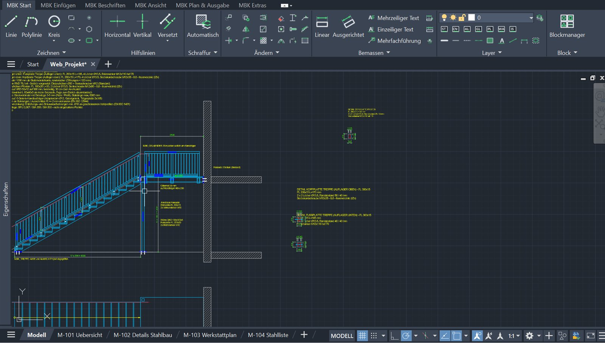

Der günstige Einstieg in professionelle Metallbau-Pläne.
Wer einen eigenen Metallbaubetrieb oder ein Zeichnungsbüro startet, braucht ab dem ersten Auftrag saubere Werkstattpläne – aber kein Branchenpaket für mehrere tausend Franken. MBKCAD macht aus dem günstigen AutoCAD LT ein Metallbau-Werkzeug nach Schweizer Praxis.

Sechs Gründe, warum MBKCAD ein idealer Einstieg ist
Kleines Budget, volle Werkzeuge
Ab CHF 35.– pro Monat und monatlich kündbar. Kein Startkapital in Software gebunden, solange die ersten Aufträge noch anlaufen.
AutoCAD LT genügt
Die günstigste AutoCAD-Variante reicht. Viele kennen sie aus Lehre und Betrieb – es braucht keine zweite, teure CAD-Plattform.
Gelerntes sofort anwenden
Begriffe, Schraffuren und Darstellung wie im Zeichnungslehrgang AM Suisse. Was Sie in der Lehre gelernt haben, funktioniert vom ersten Tag an.
Weniger Fehler in den ersten Projekten
Treppen und Geländer werden rot / grün geprüft, Schraffuren nach SIA 400 gesetzt, Stücklisten rechnen selbst. Das hilft gegen teure Fehler – prüfen müssen Sie trotzdem selbst.
Genau die Aufträge eines Kleinbetriebs
Geländer, Treppen, Bleche, Stahlbau-Details, Schweissnähte und Bauanschlüsse – die 10 Editoren decken ab, womit neue Betriebe ihr Geld verdienen.
Schnell startklar, professioneller Auftritt
Setup in unter einer Minute, ohne Administratorrechte. Pläne mit eigenem Plankopf und Firmennamen, als PDF und als normale DWG-Datei.
Klein anfangen, später umsteigen
Sie zahlen nur so viel, wie Ihr Betrieb gerade braucht. Alle Lizenzen haben den vollen Funktionsumfang.
Monat
Ideal für die ersten Aufträge – monatlich kündbar, kein Risiko.
Jahr
Entspricht CHF 31.67 pro Monat – zwei Monate gespart.
Lebenslang
Günstiger als die Jahreslizenz, sobald Sie MBKCAD zwei Jahre nutzen – danach keine Kosten mehr.
Ihre Pläne bleiben normale DWG-Dateien: Auch ohne MBKCAD lassen sie sich in AutoCAD öffnen und weiterbearbeiten.
MBKCAD oder Branchenlösung?
| MBKCAD | typische Branchenlösung | |
|---|---|---|
| Einstieg | ab CHF 35.– pro Monat, monatlich kündbar | oft hohe Einmalkosten plus Wartung |
| CAD-Grundlage | AutoCAD LT ab 2024 genügt | meist AutoCAD-Vollversion oder eigene Plattform |
| Einarbeitung | gewohnte AutoCAD-Bedienung, Begriffe wie im Lehrgang | eigene Oberfläche lernen |
| Schweizer Regeln (SIA 400, BFU, SIA 358) | eingebaut (ohne Gewähr) | je nach Anbieter |
| 3D-Modell, NC-Daten | nein – reines 2D | häufig ja |
Für alle, die den Schritt in die Selbständigkeit machen
Neu selbständig
Metallbauer und Metallbaukonstrukteure, die ein eigenes Büro oder eine kleine Werkstatt eröffnen und nicht mit tausenden Franken Software-Kosten starten wollen.
Kleine Werkstätten
Betriebe mit wenigen Arbeitsplätzen, die Werkstattpläne selbst zeichnen und dafür kein grosses Branchenpaket brauchen.
Freie Konstrukteure
Zeichnungsbüros, die für Metallbauer Pläne erstellen – mit AutoCAD LT, das oft ohnehin vorhanden ist.
Nach der Lehre
Junge Fachleute, die mit dem Wissen aus dem Zeichnungslehrgang direkt produktiv arbeiten möchten.
Pro und Contra
MBKCAD ist bewusst ein Einsteiger-Werkzeug. Damit Sie wissen, worauf Sie sich einlassen, hier beide Seiten.
Das spricht dafür
- Tiefe EinstiegskostenAb CHF 35.– pro Monat und monatlich kündbar – oder einmalig CHF 720.– für immer. Kein grosses Investment vor dem ersten Auftrag.
- AutoCAD LT reichtMBKCAD läuft schon auf AutoCAD LT ab 2024, der günstigsten AutoCAD-Variante (und auch auf der Vollversion).
- Schweizer Praxis eingebautSchraffuren nach SIA 400, Treppen- und Geländerprüfung nach BFU und SIA 358, Plankopf und Begriffe wie im Zeichnungslehrgang.
- Nichts Neues lernenAlles liegt im gewohnten AutoCAD-Menüband. Die Zeichnungen bleiben normale DWG-Dateien, die Kunden und Architekten ohne MBKCAD öffnen können.
- Alles in einem PaketProfile, Schrauben, Blech, Schweissnähte, Treppen, Geländer, Bauanschluss, Stücklisten, Pläne und PDF.
- Einfach installiertSetup pro Benutzer ohne Administratorrechte, rückstandslos wieder entfernbar.
- Direkter DrahtRückmeldungen gehen direkt an die Entwicklung und fliessen in die nächsten Updates ein.
Das sollten Sie wissen
- Reines 2DKein 3D-Modell, keine automatische Ableitung von Werkstattplänen aus 3D und keine Kollisionsprüfung, wie es 3D-Stahlbauprogramme bieten.
- AutoCAD ist nicht dabeiAutoCAD LT oder AutoCAD muss separat bei Autodesk lizenziert werden – diese Kosten kommen dazu.
- Keine MaschinendatenKeine direkte Ausgabe für CNC-Anlagen (z.B. DSTV) und keine Anbindung an Kalkulation oder ERP.
- Nur Windows, nur DeutschAuf die Schweizer Praxis ausgerichtet; kein Mac, keine weiteren Sprachen.
- Junges ProduktMBKCAD ist neu und wird laufend weiterentwickelt. Fehler sind möglich, Support läuft per Mail und Feedback – es gibt keine Hotline.
- Lizenz an einen PC gebundenFür einen neuen PC braucht es eine neue Freischaltung über den Support.
- Normen-Prüfungen sind HilfenSie ersetzen nicht die eigene fachliche Kontrolle – siehe Hinweis unten.
Passt gut, wenn Sie …
- Werkstattpläne in 2D zeichnen (Geländer, Treppen, Bleche, Stahlbau-Details)
- mit AutoCAD LT arbeiten oder arbeiten möchten
- klein starten und die Kosten tief halten wollen
Eher nicht, wenn Sie …
- ganze Hallen oder Stahlbauten in 3D modellieren
- NC-Daten direkt an Maschinen schicken müssen
- eine Hotline mit garantierten Reaktionszeiten brauchen
Orientiert an Normen – aber ohne Gewähr
MBKCAD orientiert sich an gängigen Normen und Richtlinien, unter anderem SIA 400 (Planbearbeitung), SIA 358 (Geländer und Brüstungen), SIA 500 (hindernisfreie Bauten), den BFU-Fachdokumentationen 2.003 und 2.007 (Geländer, Treppen), SN EN ISO 2553 (Schweissnähte), DIN 6935 (Biegen von Blech), ISO 286 (Passungen) und dem Zeichnungslehrgang von AM Suisse.
Die eingebauten Werte und Prüfungen sind eine Hilfe beim Zeichnen – kein Prüfwerkzeug und kein Ersatz für die Norm. Die Software kann Fehler enthalten, und Normen werden überarbeitet. Kontrollieren Sie Masse, Mengen und Normvorgaben vor der Fertigung selbst; die Verantwortung für Pläne und Konstruktion bleibt bei Ihnen.
Haben Sie einen Fehler gefunden? Bitte über Feedback melden – er wird so schnell wie möglich korrigiert.
In drei Schritten startklar
Lizenz wählen und bezahlen
Monat, Jahr oder lebenslang. Die Lizenznummer kommt mit der Zahlungsbestätigung per Mail.
MBKCAD installieren
Setup herunterladen, die gefundene AutoCAD-Installation verbinden, installieren – fertig in unter einer Minute. Anleitung
Lizenznummer eingeben
Beim ersten Öffnen fragt MBKCAD nach der Lizenznummer und schaltet die Werkzeuge auf diesem PC frei.